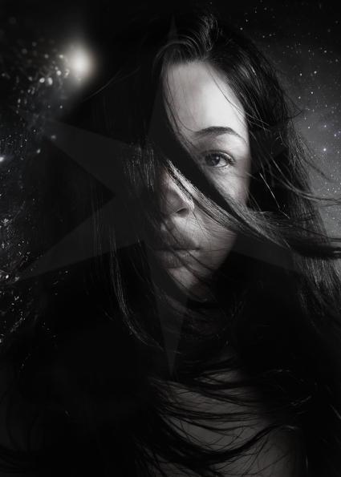

Olá, sou Thaise Oliveira


Desde a infância nos anos 90, quando blogs e fotologs eram minha escola, fui movida pela curiosidade tecnológica. Optei por cursar Design gráfico com ênfase em meios digitais por paixão pela fotografia e tecnologia, aprendendo a criar soluções com foco em usabilidade, boa comunicação e experiência do usuário. Essa base criativa, aliada ao meu interesse por tecnologia, alimentou minha vontade de programar e criar soluções web também.
Hoje trilho uma trajetória integrada: dados → back end → front end → UX/UI, com foco no Full Stack. Durante essa caminhada concluí o bootcamp de dados pela Laboratoria, montei meu próprio PC, escolhi o Linux, mergulhei no ecossistema open source e nunca mais parei de estudar. No centro dessa trilha está esse site: meu portfólio, playground e presença principal na internet, onde conecto criatividade a código e apresento minha jornada entre design, desenvolvimento e UX, pois acredito que os melhores produtos nascem na interseção destes.
Sou movida pela busca de soluções que aliam eficiência técnica, acessibilidade e experiência do usuário. Tenho experiência em HTML/CSS e Python, com prática em Dados e Cloud, aliando essas competências ao pacote Adobe para prototipação de alta fidelidade, design visual marcante e entrega de ativos prontos para implementação. Se valoriza alguém com visão criativa, comunicação clara e uma curiosidade que impulsiona melhorias contínuas está no site certo! Estou aberta a oportunidades que valorizem aprendizado constante, responsabilidade e trabalho em equipe para transformar ideias em produtos reais.
Contato
Obrigada pela visita!